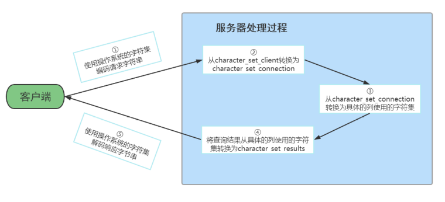
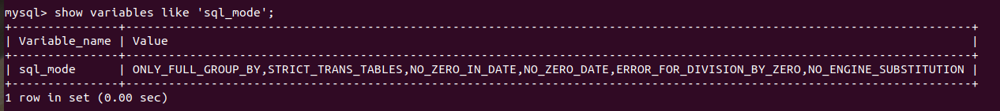

1.MySQL的4大版本
1. MySQL Community Server 社区版本，开源免费，自由下载，但不提供官方技术支持，适用于大多数普通用户。
2. MySQL Enterprise Edition 企业版本，需付费，不能在线下载，可以试用30天。提供了更多的功能和更完备的技术支持，更适合于对数据库的功能和可靠性要求较高的企业客户。
3. MySQL Cluster 集群版，开源免费。用于架设集群服务器，可将几个MySQL Server封装成一个Server。需要在社区版或企业版的基础上使用。
4. MySQL Cluster CGE 高级集群版，需付费
1.1 MySQL卸载
1
2
3
4
# 删除数据文件
sudo rm /var/lib/mysql/ -R
# 删除mysql的配置文件
sudo rm /etc/mysql/ -R
1
2
3
# 自动卸载mysql（包括server和client）
sudo apt-get autoremove mysql* --purge
sudo apt-get remove apparmor
# 检查是否卸载干净
dpkg -l | grep mysql# 若没有返回，说明已完成卸载
1.2 MySQL安装
1
sudo apt-get install mysql-server mysql-client
1
2
3
4
5
6
7
8
9
10
11
12
13
14
15
16
17
18
# 检查安装
zheng@ubuntu:~/Desktop$ mysql -V
mysql Ver 8.0.29-0ubuntu0.20.04.3 for Linux on x86_64 ((Ubuntu))
zheng@ubuntu:/var/log/mysql$ systemctl status mysql
● mysql.service - MySQL Community Server
Loaded: loaded (/lib/systemd/system/mysql.service; enabled; vendor preset: enabled)
Active: active (running) since Tue 2022-05-31 11:35:36 CST; 32s ago
Process: 40389 ExecStartPre=/usr/share/mysql/mysql-systemd-start pre (code=exited, status=0/SUCCESS)
Main PID: 40397 (mysqld)
Status: "Server is operational"
Tasks: 39 (limit: 9420)
Memory: 359.4M
CGroup: /system.slice/mysql.service
└─40397 /usr/sbin/mysqld
5月 31 11:35:36 ubuntu systemd[1]: Starting MySQL Community Server...
5月 31 11:35:36 ubuntu systemd[1]: Started MySQL Community Server.
root@ubuntu:~# mysql
Welcome to the MySQL monitor. Commands end with ; or \g.
Your MySQL connection id is 13
Server version: 8.0.29-0ubuntu0.20.04.3 (Ubuntu)
Copyright (c) 2000, 2022, Oracle and/or its affiliates.
Oracle is a registered trademark of Oracle Corporation and/or its
affiliates. Other names may be trademarks of their respective
owners.
Type 'help;' or '\h' for help. Type '\c' to clear the current input statement.
mysql>
1
2
3
4
5
# 开机自启动
root@ubuntu:~# systemctl list-unit-files | grep mysql
mysql.service enabled enabled
# 如果不是enabled
root@ubuntu:~# systemctl enable mysqld.service
1.3 远程连接
1.关注机器是否开启防火墙
1
2
3
4
5
6
7
8
9
10
11
12
13
14
15
16
17
18
19
20
# ubuntu系统
root@ubuntu:~# ufw status
状态： 激活
至 动作 来自
- -- --
3306 ALLOW Anywhere
22 ALLOW Anywhere
3306 (v6) ALLOW Anywhere (v6)
22 (v6) ALLOW Anywhere (v6)
root@ubuntu:~# ufw enable
在系统启动时启用和激活防火墙
root@ubuntu:~# ufw disable
防火墙在系统启动时自动禁用
# 如果3306端口没有打开，需要打开3306端口
ufw allow 3306
# 如果需要关闭，使用下面命令
ufw delete allow 3306
2.更改权限
mysql> use mysql
Database changed
mysql> select host,user from user;
+-----------+------------------+
| host | user |
+-----------+------------------+
| localhost | debian-sys-maint |
| localhost | mysql.infoschema |
| localhost | mysql.session |
| localhost | mysql.sys |
| localhost | root |
+-----------+------------------+
5 rows in set (0.00 sec)
更新user表中的root的属性
# 此处可以直接使用%，所有用户都可以连接
update user set host = '192.168.1.%' where user = 'root';
flush privileges;
在mysql8.0中，需要修改密码保存格式
alter user 'root'@'%' identified with mysql_native_password by 'abc123';
外部连接即可
2.字符集
2.1 修改字符集
在MySQL 8.0版本之前，默认字符集为 latin1 ，utf8字符集指向的是 utf8mb3 。网站开发人员在数据库 设计的时候往往会将编码修改为utf8字符集。如果遗忘修改默认的编码，就会出现乱码的问题。从MySQL 8.0开始，数据库的默认编码将改为 utf8mb4 ，从而避免上述乱码的问题。
show variables like '%char%';
+--------------------------+----------------------------+
| Variable_name | Value |
+--------------------------+----------------------------+
| character_set_client | utf8mb4 |
| character_set_connection | utf8mb4 |
| character_set_database | utf8mb4 |
| character_set_filesystem | binary |
| character_set_results | utf8mb4 |
| character_set_server | utf8mb4 |
| character_set_system | utf8mb3 |
| character_sets_dir | /usr/share/mysql/charsets/ |
+--------------------------+----------------------------+
8 rows in set (0.00 sec)
在MySQL5.7或之前的版本中，在文件最后加上中文字符集配置：
1
vim /etc/my.cnf
1
2
# 在[mysqld]下添加下面的修改
character_set_server=utf8
1
systemctl restart mysqld
这样，没修改前录入的数据任然是latin，修改后录入的才是utf8。所以，已有的数据需要导出后，重新导入才行。
修改已创建数据库的字符集
alter database dbtest1 character set 'utf8';
修改已创建数据表的字符集
alter table t_emp convert to character set 'utf8';
注意：但是原有的数据如果是用非'utf8'编码的话，数据本身编码不会发生改变。已有数据需要导出或删除，然后重新插入。
2.2 各级别的字符集
MySQL有4个级别的字符集和比较规则，分别是：
- 服务器级别
- 数据库级别
- 表级别
- 列级别
执行如下SQL语句：
show variables like 'character%';
+--------------------------+----------------------------+
| Variable_name | Value |
+--------------------------+----------------------------+
| character_set_client | utf8mb4 |
| character_set_connection | utf8mb4 |
| character_set_database | utf8mb4 |
| character_set_filesystem | binary |
| character_set_results | utf8mb4 |
| character_set_server | utf8mb4 |
| character_set_system | utf8mb3 |
| character_sets_dir | /usr/share/mysql/charsets/ |
+--------------------------+----------------------------+
8 rows in set (0.01 sec)
- character_set_server：服务器级别的字符集
- character_set_database：当前数据库的字符集
- character_set_client：服务器解码请求时使用的字符集
- character_set_connection：服务器处理请求时会把请求字符串从character_set_client转为 character_set_connection
- character_set_results：服务器向客户端返回数据时使用的字符集
1.服务器级别
character_set_server ：服务器级别的字符集。
我们可以在启动服务器程序时通过启动选项或者在服务器程序运行过程中使用 SET 语句修改这两个变量 的值。比如我们可以在配置文件中这样写：
[server]
character_set_server=gbk # 默认字符集
collation_server=gbk_chinese_ci #对应的默认的比较规则
当服务器启动的时候读取这个配置文件后这两个系统变量的值便修改了。
2.数据库级别
character_set_database ：当前数据库的字符集
我们在创建和修改数据库的时候可以指定该数据库的字符集和比较规则，具体语法如下：
CREATE DATABASE 数据库名
[[DEFAULT] CHARACTER SET 字符集名称]
[[DEFAULT] COLLATE 比较规则名称];
ALTER DATABASE 数据库名
[[DEFAULT] CHARACTER SET 字符集名称]
[[DEFAULT] COLLATE 比较规则名称];
3.表级别
我们也可以在创建和修改表的时候指定表的字符集和比较规则，语法如下：
CREATE TABLE 表名 (列的信息)
[[DEFAULT] CHARACTER SET 字符集名称]
[COLLATE 比较规则名称]]
ALTER TABLE 表名
[[DEFAULT] CHARACTER SET 字符集名称]
[COLLATE 比较规则名称]
4.列级别
对于存储字符串的列，同一个表中的不同的列也可以有不同的字符集和比较规则。我们在创建和修改列 定义的时候可以指定该列的字符集和比较规则，语法如下：
CREATE TABLE 表名(
列名 字符串类型 [CHARACTER SET 字符集名称] [COLLATE 比较规则名称],
其他列...
);
ALTER TABLE 表名 MODIFY 列名 字符串类型 [CHARACTER SET 字符集名称] [COLLATE 比较规则名称];
对于某个列来说，如果在创建和修改的语句中没有指明字符集和比较规则，将使用该列所在表的字符集 和比较规则作为该列的字符集和比较规则。
提示 在转换列的字符集时需要注意，如果转换前列中存储的数据不能用转换后的字符集进行表示会发生 错误。比方说原先列使用的字符集是utf8，列中存储了一些汉字，现在把列的字符集转换为ascii的 话就会出错，因为ascii字符集并不能表示汉字字符。
5.小结
我们介绍的这4个级别字符集和比较规则的联系如下：
- 如果 创建或修改列 时没有显式的指定字符集和比较规则，则该列 默认用表的 字符集和比较规则
- 如果 创建表时 没有显式的指定字符集和比较规则，则该表 默认用数据库的 字符集和比较规则
- 如果 创建数据库时 没有显式的指定字符集和比较规则，则该数据库 默认用服务器的 字符集和比较规 则 知道了这些规则之后，对于给定的表，我们应该知道它的各个列的字符集和比较规则是什么，从而根据 这个列的类型来确定存储数据时每个列的实际数据占用的存储空间大小了。比方说我们向表 t 中插入一 条记录：
mysql> INSERT INTO t(col) VALUES('我们');
Query OK, 1 row affected (0.00 sec)
mysql> SELECT * FROM t;
+--------+
| s |
+--------+
| 我们 |
+--------+
1 row in set (0.00 sec)
首先列 col 使用的字符集是 gbk ，一个字符 '我' 在 gbk 中的编码为 0xCED2 ，占用两个字节，两个字 符的实际数据就占用4个字节。如果把该列的字符集修改为 utf8 的话，这两个字符就实际占用6个字节
3 字符集与比较规则(了解)
1. utf8 与 utf8mb4
utf8 字符集表示一个字符需要使用1～4个字节，但是我们常用的一些字符使用1～3个字节就可以表示 了。而字符集表示一个字符所用的最大字节长度，在某些方面会影响系统的存储和性能，所以设计 MySQL的设计者偷偷的定义了两个概念：
utf8mb3 ：阉割过的 utf8 字符集，只使用1～3个字节表示字符。
utf8mb4 ：正宗的 utf8 字符集，使用1～4个字节表示字符。
2. 比较规则
上表中，MySQL版本一共支持41种字符集，其中的 Default collation 列表示这种字符集中一种默认 的比较规则，里面包含着该比较规则主要作用于哪种语言，比如 utf8_polish_ci 表示以波兰语的规则 比较， utf8_spanish_ci 是以西班牙语的规则比较， utf8_general_ci 是一种通用的比较规则。
后缀表示该比较规则是否区分语言中的重音、大小写。具体如下：
| 后缀 | 英文释义 | 描述 |
|---|---|---|
| _ai | accent insensitive | 不区分重音 |
| _as | accent sensitive | 区分重音 |
| _ci | case insensitive | 不区分大小写 |
| _cs | case sensitive | 区分大小写 |
| _bin | binary | 以二进制方式比较 |
最后一列 Maxlen ，它代表该种字符集表示一个字符最多需要几个字节。
常用操作1：
#查看GBK字符集的比较规则
SHOW COLLATION LIKE 'gbk%';
#查看UTF-8字符集的比较规则
SHOW COLLATION LIKE 'utf8%';
常用操作2：
#查看服务器的字符集和比较规则
SHOW VARIABLES LIKE '%_server';
#查看数据库的字符集和比较规则
SHOW VARIABLES LIKE '%_database';
#查看具体数据库的字符集
SHOW CREATE DATABASE dbtest1;
#修改具体数据库的字符集
ALTER DATABASE dbtest1 DEFAULT CHARACTER SET 'utf8' COLLATE 'utf8_general_ci';
常用操作3：
#查看表的字符集
show create table employees;
#查看表的比较规则
show table status from atguigudb like 'employees';
#修改表的字符集和比较规则
ALTER TABLE emp1 DEFAULT CHARACTER SET 'utf8' COLLATE 'utf8_general_ci';
3.请求到响应过程中字符集的变化
| 系统变量 | 描述 |
|---|---|
| character_set_client | 服务器解码请求时使用的字符集 |
| character_set_connection | 服务器处理请求时会把请求字符串从 character_set_client 转为 character_set_connection |
| character_set_results | 服务器向客户端返回数据时使用的字符集 |
这几个系统变量在我的计算机上的默认值如下（不同操作系统的默认值可能不同）：
为了体现出字符集在请求处理过程中的变化，我们这里特意修改一个系统变量的值：
mysql> set character_set_connection = gbk;
Query OK, 0 rows affected (0.00 sec)
现在假设我们客户端发送的请求是下边这个字符串：
SELECT * FROM t WHERE s = '我';
为了方便大家理解这个过程，我们只分析字符 ‘我’ 在这个过程中字符集的转换。 现在看一下在请求从发送到结果返回过程中字符集的变化：
客户端发送请求所使用的字符集 一般情况下客户端所使用的字符集和当前操作系统一致，不同操作系统使用的字符集可能不一 样，如下：
类 Unix 系统使用的是 utf8 Windows 使用的是 gbk 当客户端使用的是 utf8 字符集，字符 ‘我’ 在发送给服务器的请求中的字节形式就是： 0xE68891
提示 如果你使用的是可视化工具，比如navicat之类的，这些工具可能会使用自定义的字符集来编 码发送到服务器的字符串，而不采用操作系统默认的字符集（所以在学习的时候还是尽量用 命令行窗口）。
服务器接收到客户端发送来的请求其实是一串二进制的字节，它会认为这串字节采用的字符集是 character_set_client ，然后把这串字节转换为 character_set_connection 字符集编码的 字符。 由于我的计算机上 character_set_client 的值是 utf8 ，首先会按照 utf8 字符集对字节串 0xE68891 进行解码，得到的字符串就是 ‘我’ ，然后按照 character_set_connection 代表的 字符集，也就是 gbk 进行编码，得到的结果就是字节串 0xCED2 。
因为表 t 的列 col 采用的是 gbk 字符集，与 character_set_connection 一致，所以直接到列 中找字节值为 0xCED2 的记录，最后找到了一条记录。
提示 如果某个列使用的字符集和character_set_connection代表的字符集不一致的话，还需要进行 一次字符集转换。
上一步骤找到的记录中的 col 列其实是一个字节串 0xCED2 ， col 列是采用 gbk 进行编码的，所 以首先会将这个字节串使用 gbk 进行解码，得到字符串 ‘我’ ，然后再把这个字符串使用 character_set_results 代表的字符集，也就是 utf8 进行编码，得到了新的字节串： 0xE68891 ，然后发送给客户端。
由于客户端是用的字符集是 utf8 ，所以可以顺利的将 0xE68891 解释成字符 我 ，从而显示到我 们的显示器上，所以我们人类也读懂了返回的结果。

4. SQL大小写规范
1.Windows和Linux平台区别
在 SQL 中，关键字和函数名是不用区分字母大小写的，比如 SELECT、WHERE、ORDER、GROUP BY 等关 键字，以及 ABS、MOD、ROUND、MAX 等函数名。
不过在 SQL 中，你还是要确定大小写的规范，因为在 Linux 和 Windows 环境下，你可能会遇到不同的大 小写问题。 windows系统默认大小写不敏感 ，但是 linux系统是大小写敏感的 。
通过如下命令查看：
SHOW VARIABLES LIKE '%lower_case_table_names%'
+------------------------+-------+
| Variable_name | Value |
+------------------------+-------+
| lower_case_table_names | 0 |
+------------------------+-------+
1 row in set (0.00 sec)
lower_case_table_names参数值的设置：
- 默认为0，大小写敏感 。
- 设置1，大小写不敏感。创建的表，数据库都是以小写形式存放在磁盘上，对于sql语句都是转 换为小写对表和数据库进行查找。
- 设置2，创建的表和数据库依据语句上格式存放，凡是查找都是转换为小写进行。
两个平台上SQL大小写的区别具体来说：
MySQL在Linux下数据库名、表名、列名、别名大小写规则是这样的：
1、数据库名、表名、表的别名、变量名是严格区分大小写的；
2、关键字、函数名称在 SQL 中不区分大小写；
3、列名（或字段名）与列的别名（或字段别名）在所有的情况下均是忽略大小写的；
MySQL在Windows的环境下全部不区分大小写
2 Linux下大小写规则设置
当想设置为大小写不敏感时，要在 my.cnf 这个配置文件 [mysqld] 中加入 lower_case_table_names=1 ，然后重启服务器。 但是要在重启数据库实例之前就需要将原来的数据库和表转换为小写，否则将找不到数据库名。此参数适用于MySQL5.7。
在MySQL 8下禁止在重新启动 MySQL 服务时将 lower_case_table_names 设置成不同于初始化 MySQL 服务时设置的 lower_case_table_names 值。如果非要将MySQL8设置为大小写不敏感，具体步骤为：
1、停止MySQL服务
2、删除数据目录，即删除 /var/lib/mysql 目录
3、在MySQL配置文件（ /etc/my.cnf ）中添加 lower_case_table_names=1
4、启动MySQL服务
3 SQL编写建议
如果你的变量名命名规范没有统一，就可能产生错误。这里有一个有关命名规范的建议：
1. 关键字和函数名称全部大写；
2. 数据库名、表名、表别名、字段名、字段别名等全部小写；
3. SQL 语句必须以分号结尾。
数据库名、表名和字段名在 Linux MySQL 环境下是区分大小写的，因此建议你统一这些字段的命名规 则，比如全部采用小写的方式。
虽然关键字和函数名称在 SQL 中不区分大小写，也就是如果小写的话同样可以执行。但是同时将关键词 和函数名称全部大写，以便于区分数据库名、表名、字段名。
5.sql_mode的合理设置
5.1 宽松模式 vs 严格模式
宽松模式： 如果设置的是宽松模式，那么我们在插入数据的时候，即便是给了一个错误的数据，也可能会被接受， 并且不报错。
举例 ：我在创建一个表时，该表中有一个字段为name，给name设置的字段类型时 char(10) ，如果我 在插入数据的时候，其中name这个字段对应的有一条数据的 长度超过了10 ，例如’1234567890abc’，超过了设定的字段长度10，那么不会报错，并且取前10个字符存上，也就是说你这个数据被存为 了’1234567890’，而’abc’就没有了。但是，我们给的这条数据是错误的，因为超过了字段长度，但是并没 有报错，并且mysql自行处理并接受了，这就是宽松模式的效果。
应用场景 ：通过设置sql mode为宽松模式，来保证大多数sql符合标准的sql语法，这样应用在不同数据库之间进行迁移 时，则不需要对业务sql 进行较大的修改。
严格模式： 出现上面宽松模式的错误，应该报错才对，所以MySQL5.7版本就将sql_mode默认值改为了严格模式。所 以在 生产等环境 中，我们必须采用的是严格模式，进而 开发、测试环境 的数据库也必须要设置，这样在 开发测试阶段就可以发现问题。并且我们即便是用的MySQL5.6，也应该自行将其改为严格模式。
开发经验 ：MySQL等数据库总想把关于数据的所有操作都自己包揽下来，包括数据的校验，其实开发 中，我们应该在自己 开发的项目程序级别将这些校验给做了 ，虽然写项目的时候麻烦了一些步骤，但是这 样做之后，我们在进行数据库迁移或者在项目的迁移时，就会方便很多。 改为严格模式后可能会存在的问题：
若设置模式中包含了 NO_ZERO_DATE ，那么MySQL数据库不允许插入零日期，插入零日期会抛出错误而 不是警告。例如，表中含字段TIMESTAMP列（如果未声明为NULL或显示DEFAULT子句）将自动分配 DEFAULT ‘0000-00-00 00:00:00’（零时间戳），这显然是不满足sql_mode中的NO_ZERO_DATE而报错。
5.2 模式查看和设置
查看当前的sql_mode
select @@session.sql_mode
select @@global.sql_mode
#或者
show variables like 'sql_mode';

临时设置方式：设置当前窗口中设置sql_mode
SET GLOBAL sql_mode = 'modes...'; #全局
SET SESSION sql_mode = 'modes...'; #当前会话
#改为严格模式。此方法只在当前会话中生效，关闭当前会话就不生效了。
set SESSION sql_mode='STRICT_TRANS_TABLES';
#改为严格模式。此方法在当前服务中生效，重启MySQL服务后失效。
set GLOBAL sql_mode='STRICT_TRANS_TABLES';
永久设置方式：在/etc/my.cnf中配置sql_mode
在my.cnf文件(windows系统是my.ini文件)，新增：
[mysqld]
sql_mode=ONLY_FULL_GROUP_BY,STRICT_TRANS_TABLES,NO_ZERO_IN_DATE,NO_ZERO_DATE,ERROR_FOR
_DIVISION_BY_ZERO,NO_ENGINE_SUBSTITUTION
然后 重启MySQL 。
当然生产环境上是禁止重启MySQL服务的，所以采用 临时设置方式 + 永久设置方式 来解决线上的问题， 那么即便是有一天真的重启了MySQL服务，也会永久生效了。